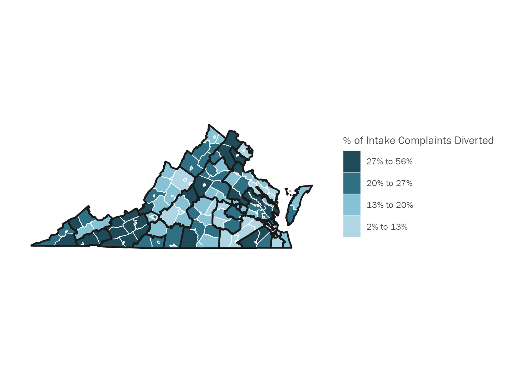
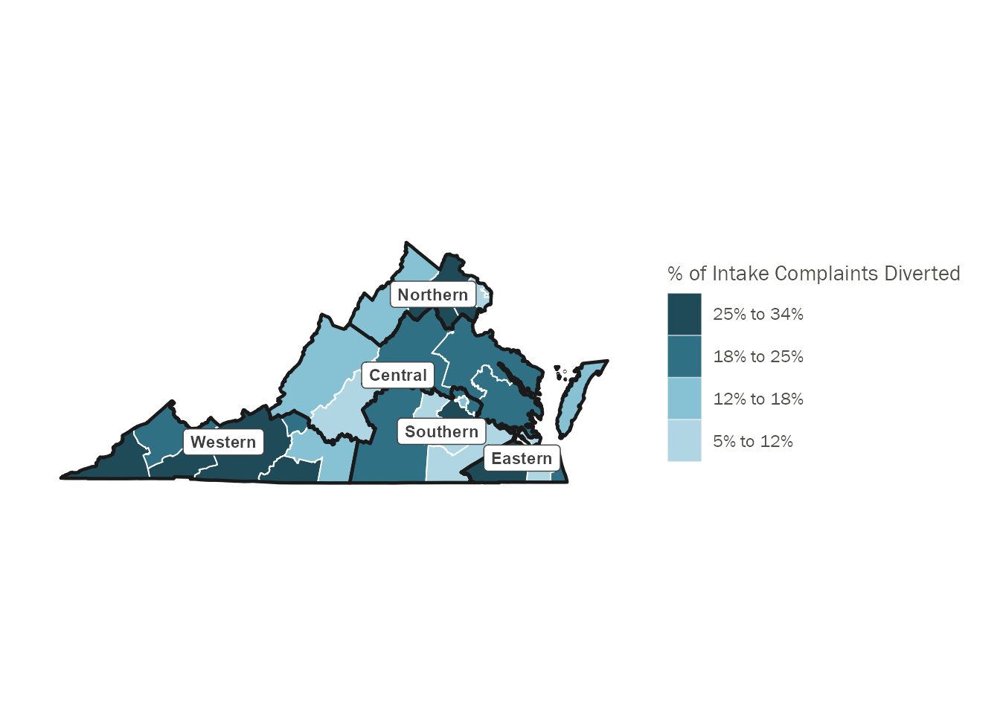

| Diverted? | Unique Complaints (N) | Complaints, Percent of Sample (%) |
|---|---|---|
| Yes | 37,411 | 18.7% |
| No | 162,240 | 81.3% |
Analysis: Part II
Data Sample:
Juvenile intake complaints with intake dates from July 1, 2015 - June 30, 2021
Dispositions – all dispositions for the intake complaints in the sample.
Research Question:
Conduct a front-end system assessment from intake through petition for all complaints 2016-2021.
Methods:
We will conduct a descriptive analysis of the front end of the system from intake through petition, provide unadjusted counts, RRI’s and means tests where applicable, by race, sex, offense, risk, CSU, and year for:
Complaints
Intake decisions: divert, resolve, petition, other
Average LOS on diversion
Diversion completions: successful, unsuccessful, other
Dispositions on petitioned cases
Cohort: All complaints from 2016-2021
Tables
Table 1: % of All Complaints Diverted, 2015-2021
Note: I am currently coding the following intake decisions as ‘Diverted`: “UNSUCCESSFUL DIVERSION/PETITION FILED” (code of ’18’), “SUCCESSFUL DIVERSION” (code of ‘20’), and “UNSUCCESSFUL DIVERSION/NO PETITION FILED” (code of ‘21’). All other intake decisions are coded as “Not Diverted”.
Table 2: % of All Complaints Diverted by Year
Note: I am currently coding the following intake decisions as ‘Diverted`: “UNSUCCESSFUL DIVERSION/PETITION FILED” (code of ’18’), “SUCCESSFUL DIVERSION” (code of ‘20’), and “UNSUCCESSFUL DIVERSION/NO PETITION FILED” (code of ‘21’). All other intake decisions are coded as “Not Diverted”.
| Year of Complaint | All Complaints (N) | All Complaints (column %) | Complaints Diverted (N) | Complaints Diverted (row %) | Complaints Not Diverted (N) | Complaints Not Diverted (row %) |
|---|---|---|---|---|---|---|
| 2015 | 19,549 | 9.8% | 2,824 | 14.4% | 16,725 | 85.6% |
| 2016 | 39,575 | 19.8% | 6,371 | 16.1% | 33,204 | 83.9% |
| 2017 | 39,397 | 19.7% | 6,826 | 17.3% | 32,571 | 82.7% |
| 2018 | 35,385 | 17.7% | 7,042 | 19.9% | 28,343 | 80.1% |
| 2019 | 34,842 | 17.5% | 8,358 | 24.0% | 26,484 | 76.0% |
| 2020 | 21,402 | 10.7% | 4,152 | 19.4% | 17,250 | 80.6% |
| 2021 | 9,501 | 4.8% | 1,838 | 19.3% | 7,663 | 80.7% |
| Overall | 199,651 | 100.0% | 37,411 | 18.7% | 162,240 | 81.3% |
Table 3: % of All Complaints Diverted by Race/Ethnicity
Note: I am currently coding the following intake decisions as ‘Diverted`: “UNSUCCESSFUL DIVERSION/PETITION FILED” (code of ’18’), “SUCCESSFUL DIVERSION” (code of ‘20’), and “UNSUCCESSFUL DIVERSION/NO PETITION FILED” (code of ‘21’). All other intake decisions are coded as “Not Diverted”.
| Race/Ethnicity | All Complaints (N) | All Complaints (column %) | Complaints Diverted (N) | Complaints Diverted (row %) | Complaints Not Diverted (N) | Complaints Not Diverted (row %) |
|---|---|---|---|---|---|---|
| American Indian | 197 | 0.1% | 46 | 23.4% | 151 | 76.6% |
| Asian | 1,949 | 1.0% | 443 | 22.7% | 1,506 | 77.3% |
| Black | 81,971 | 41.1% | 12,320 | 15.0% | 69,651 | 85.0% |
| Hispanic | 21,495 | 10.8% | 3,928 | 18.3% | 17,567 | 81.7% |
| White | 80,498 | 40.3% | 17,357 | 21.6% | 63,141 | 78.4% |
| Other | 12,135 | 6.1% | 2,895 | 23.9% | 9,240 | 76.1% |
| Missing | 1,406 | 0.7% | 422 | 30.0% | 984 | 70.0% |
| Overall | 199,651 | 100.0% | 37,411 | 18.7% | 162,240 | 81.3% |
Table 4: % of All Complaints Diverted by Gender
Note: I am currently coding the following intake decisions as ‘Diverted`: “UNSUCCESSFUL DIVERSION/PETITION FILED” (code of ’18’), “SUCCESSFUL DIVERSION” (code of ‘20’), and “UNSUCCESSFUL DIVERSION/NO PETITION FILED” (code of ‘21’). All other intake decisions are coded as “Not Diverted”.
| Gender | All Complaints (N) | All Complaints (column %) | Complaints Diverted (N) | Complaints Diverted (row %) | Complaints Not Diverted (N) | Complaints Not Diverted (row %) |
|---|---|---|---|---|---|---|
| Female | 65,632 | 32.9% | 14,244 | 21.7% | 51,388 | 78.3% |
| Male | 134,019 | 67.1% | 23,167 | 17.3% | 110,852 | 82.7% |
| Overall | 199,651 | 100.0% | 37,411 | 18.7% | 162,240 | 81.3% |
Table 5: % of All Complaints Diverted by Age at Petition
Note: I am currently coding the following intake decisions as ‘Diverted`: “UNSUCCESSFUL DIVERSION/PETITION FILED” (code of ’18’), “SUCCESSFUL DIVERSION” (code of ‘20’), and “UNSUCCESSFUL DIVERSION/NO PETITION FILED” (code of ‘21’). All other intake decisions are coded as “Not Diverted”.
Question: We seem to be missing age (pet_age) for about 35% of all records in the intake complaints file – how should we interpret this? Something seems off with this table – why is the diversion rate so much higher for youth whose age is missing? Does missing age mean youth was not formally petitioned and thus they don’t have age here?
TO DO: Decide on which ages to exclude because of likely data collection issues (e.g. ages of 0 or 44)
| Age at Intake | All Complaints (N) | All Complaints (column %) | Complaints Diverted (N) | Complaints Diverted (row %) | Complaints Not Diverted (N) | Complaints Not Diverted (row %) |
|---|---|---|---|---|---|---|
| 0 | 151 | 0.1% | 2 | 1.3% | 149 | 98.7% |
| 1 | 84 | 0.0% | 0 | 0.0% | 84 | 100.0% |
| 2 | 104 | 0.1% | 0 | 0.0% | 104 | 100.0% |
| 3 | 106 | 0.1% | 0 | 0.0% | 106 | 100.0% |
| 4 | 108 | 0.1% | 1 | 0.9% | 107 | 99.1% |
| 5 | 359 | 0.2% | 26 | 7.2% | 333 | 92.8% |
| 6 | 538 | 0.3% | 48 | 8.9% | 490 | 91.1% |
| 7 | 654 | 0.3% | 68 | 10.4% | 586 | 89.6% |
| 8 | 763 | 0.4% | 110 | 14.4% | 653 | 85.6% |
| 9 | 936 | 0.5% | 157 | 16.8% | 779 | 83.2% |
| 10 | 1,514 | 0.8% | 310 | 20.5% | 1,204 | 79.5% |
| 11 | 3,435 | 1.7% | 1,033 | 30.1% | 2,402 | 69.9% |
| 12 | 7,985 | 4.0% | 2,463 | 30.8% | 5,522 | 69.2% |
| 13 | 14,571 | 7.3% | 4,173 | 28.6% | 10,398 | 71.4% |
| 14 | 24,241 | 12.1% | 5,516 | 22.8% | 18,725 | 77.2% |
| 15 | 35,295 | 17.7% | 6,722 | 19.0% | 28,573 | 81.0% |
| 16 | 46,549 | 23.3% | 7,868 | 16.9% | 38,681 | 83.1% |
| 17 | 54,623 | 27.4% | 8,389 | 15.4% | 46,234 | 84.6% |
| 18 | 6,208 | 3.1% | 407 | 6.6% | 5,801 | 93.4% |
| 19 | 613 | 0.3% | 3 | 0.5% | 610 | 99.5% |
| 20 | 188 | 0.1% | 1 | 0.5% | 187 | 99.5% |
| 21 | 26 | 0.0% | 0 | 0.0% | 26 | 100.0% |
| 22 | 19 | 0.0% | 0 | 0.0% | 19 | 100.0% |
| 23 | 8 | 0.0% | 0 | 0.0% | 8 | 100.0% |
| 24 | 10 | 0.0% | 0 | 0.0% | 10 | 100.0% |
| 25 | 6 | 0.0% | 0 | 0.0% | 6 | 100.0% |
| 26 | 4 | 0.0% | 0 | 0.0% | 4 | 100.0% |
| 27 | 5 | 0.0% | 0 | 0.0% | 5 | 100.0% |
| 28 | 4 | 0.0% | 0 | 0.0% | 4 | 100.0% |
| 29 | 2 | 0.0% | 0 | 0.0% | 2 | 100.0% |
| 30 | 2 | 0.0% | 0 | 0.0% | 2 | 100.0% |
| 31 | 2 | 0.0% | 0 | 0.0% | 2 | 100.0% |
| 32 | 3 | 0.0% | 0 | 0.0% | 3 | 100.0% |
| 33 | 4 | 0.0% | 0 | 0.0% | 4 | 100.0% |
| 34 | 2 | 0.0% | 0 | 0.0% | 2 | 100.0% |
| 35 | 7 | 0.0% | 0 | 0.0% | 7 | 100.0% |
| 36 | 2 | 0.0% | 0 | 0.0% | 2 | 100.0% |
| 37 | 2 | 0.0% | 0 | 0.0% | 2 | 100.0% |
| 38 | 1 | 0.0% | 0 | 0.0% | 1 | 100.0% |
| 39 | 1 | 0.0% | 0 | 0.0% | 1 | 100.0% |
| 41 | 1 | 0.0% | 0 | 0.0% | 1 | 100.0% |
| 43 | 1 | 0.0% | 0 | 0.0% | 1 | 100.0% |
| 44 | 4 | 0.0% | 0 | 0.0% | 4 | 100.0% |
| NA | 510 | 0.3% | 114 | 22.4% | 396 | 77.6% |
| Overall | 199,651 | 100.0% | 37,411 | 18.7% | 162,240 | 81.3% |
Table 6a: % of All Complaints Diverted by Offense Type (most serious offense; mso_flag == “Y”)
Note: I am currently coding the following intake decisions as ‘Diverted`: “UNSUCCESSFUL DIVERSION/PETITION FILED” (code of ’18’), “SUCCESSFUL DIVERSION” (code of ‘20’), and “UNSUCCESSFUL DIVERSION/NO PETITION FILED” (code of ‘21’). All other intake decisions are coded as “Not Diverted”.
| Offense Description | All Complaints (N) | All Complaints (column %) | Complaints Diverted (N) | Complaints Diverted (row %) | Complaints Not Diverted (N) | Complaints Not Diverted (row %) |
|---|---|---|---|---|---|---|
| Class 1 Misdemeanor Against Persons | 30,775 | 15.4% | 8,688 | 28.2% | 22,087 | 71.8% |
| Court Order Violation | 15,172 | 7.6% | 7 | 0.0% | 15,165 | 100.0% |
| Felony against Persons | 12,849 | 6.4% | 798 | 6.2% | 12,051 | 93.8% |
| Felony Weapons and Felony Narcotics Distribution | 1,639 | 0.8% | 90 | 5.5% | 1,549 | 94.5% |
| Other Class 1 Misdemeanor | 39,205 | 19.6% | 12,378 | 31.6% | 26,827 | 68.4% |
| Other Felony | 18,822 | 9.4% | 1,828 | 9.7% | 16,994 | 90.3% |
| Other Violation | 29,137 | 14.6% | 5,898 | 20.2% | 23,239 | 79.8% |
| Prob./Parole Violation | 12,435 | 6.2% | 0 | 0.0% | 12,435 | 100.0% |
| Status Offense | 39,617 | 19.8% | 7,724 | 19.5% | 31,893 | 80.5% |
| Overall | 199,651 | 100.0% | 37,411 | 18.7% | 162,240 | 81.3% |
Table 6b: % of All Complaints Diverted by Status Offense Type (most serious offense is status; mso_flag == “Y”)
Note: I am currently coding the following intake decisions as ‘Diverted`: “UNSUCCESSFUL DIVERSION/PETITION FILED” (code of ’18’), “SUCCESSFUL DIVERSION” (code of ‘20’), and “UNSUCCESSFUL DIVERSION/NO PETITION FILED” (code of ‘21’). All other intake decisions are coded as “Not Diverted”.
| Status Offense Description | All Complaints (N) | All Complaints (column %) | Complaints Diverted (N) | Complaints Diverted (row %) | Complaints Not Diverted (N) | Complaints Not Diverted (row %) |
|---|---|---|---|---|---|---|
| CHINS | 10,369 | 5.2% | 1,057 | 10.2% | 9,312 | 89.8% |
| CHINSup | 23,350 | 11.7% | 5,283 | 22.6% | 18,067 | 77.4% |
| Other Status Offense | 5,898 | 3.0% | 1,384 | 23.5% | 4,514 | 76.5% |
| Overall | 39,617 | 19.8% | 7,724 | 19.5% | 31,893 | 80.5% |
Table 7: % of All Complaints Diverted by Court Service Unit (CSU)
Note: I am currently coding the following intake decisions as ‘Diverted`: “UNSUCCESSFUL DIVERSION/PETITION FILED” (code of ’18’), “SUCCESSFUL DIVERSION” (code of ‘20’), and “UNSUCCESSFUL DIVERSION/NO PETITION FILED” (code of ‘21’). All other intake decisions are coded as “Not Diverted”.
| CSU | All Complaints (N) | All Complaints (column %) | Complaints Diverted (N) | Complaints Diverted (row %) | Complaints Not Diverted (N) | Complaints Not Diverted (row %) |
|---|---|---|---|---|---|---|
| 001 | 4,925 | 2.5% | 430 | 8.7% | 4,495 | 91.3% |
| 002 | 7,166 | 3.6% | 1,379 | 19.2% | 5,787 | 80.8% |
| 003 | 3,230 | 1.6% | 545 | 16.9% | 2,685 | 83.1% |
| 004 | 9,805 | 4.9% | 1,162 | 11.9% | 8,643 | 88.1% |
| 005 | 2,887 | 1.4% | 830 | 28.7% | 2,057 | 71.3% |
| 006 | 2,996 | 1.5% | 182 | 6.1% | 2,814 | 93.9% |
| 007 | 7,891 | 4.0% | 357 | 4.5% | 7,534 | 95.5% |
| 008 | 5,441 | 2.7% | 352 | 6.5% | 5,089 | 93.5% |
| 009 | 5,202 | 2.6% | 1,308 | 25.1% | 3,894 | 74.9% |
| 010 | 3,905 | 2.0% | 849 | 21.7% | 3,056 | 78.3% |
| 011 | 4,798 | 2.4% | 402 | 8.4% | 4,396 | 91.6% |
| 012 | 11,382 | 5.7% | 3,170 | 27.9% | 8,212 | 72.1% |
| 013 | 5,667 | 2.8% | 1,031 | 18.2% | 4,636 | 81.8% |
| 014 | 8,239 | 4.1% | 1,591 | 19.3% | 6,648 | 80.7% |
| 015 | 11,298 | 5.7% | 2,432 | 21.5% | 8,866 | 78.5% |
| 016 | 7,149 | 3.6% | 1,627 | 22.8% | 5,522 | 77.2% |
| 017 | 3,490 | 1.7% | 533 | 15.3% | 2,957 | 84.7% |
| 018 | 2,738 | 1.4% | 346 | 12.6% | 2,392 | 87.4% |
| 019 | 13,898 | 7.0% | 1,628 | 11.7% | 12,270 | 88.3% |
| 020 | 6,716 | 3.4% | 2,153 | 32.1% | 4,563 | 67.9% |
| 021 | 2,357 | 1.2% | 616 | 26.1% | 1,741 | 73.9% |
| 022 | 6,335 | 3.2% | 798 | 12.6% | 5,537 | 87.4% |
| 023 | 9,087 | 4.6% | 1,667 | 18.3% | 7,420 | 81.7% |
| 024 | 7,876 | 3.9% | 785 | 10.0% | 7,091 | 90.0% |
| 025 | 6,153 | 3.1% | 779 | 12.7% | 5,374 | 87.3% |
| 026 | 9,520 | 4.8% | 1,706 | 17.9% | 7,814 | 82.1% |
| 027 | 6,248 | 3.1% | 2,152 | 34.4% | 4,096 | 65.6% |
| 028 | 2,331 | 1.2% | 674 | 28.9% | 1,657 | 71.1% |
| 029 | 3,537 | 1.8% | 721 | 20.4% | 2,816 | 79.6% |
| 02A | 1,335 | 0.7% | 236 | 17.7% | 1,099 | 82.3% |
| 030 | 3,111 | 1.6% | 814 | 26.2% | 2,297 | 73.8% |
| 031 | 12,938 | 6.5% | 4,156 | 32.1% | 8,782 | 67.9% |
| Overall | 199,651 | 100.0% | 37,411 | 18.7% | 162,240 | 81.3% |
Table 8: % of All Complaints Diverted by Court Service Unit (CSU) Region
Note: I am currently coding the following intake decisions as ‘Diverted`: “UNSUCCESSFUL DIVERSION/PETITION FILED” (code of ’18’), “SUCCESSFUL DIVERSION” (code of ‘20’), and “UNSUCCESSFUL DIVERSION/NO PETITION FILED” (code of ‘21’). All other intake decisions are coded as “Not Diverted”.
See CSU regions here: https://www.djj.virginia.gov/pages/community/court-service-units.htm
| CSU Region | All Complaints (N) | All Complaints (column %) | Complaints Diverted (N) | Complaints Diverted (row %) | Complaints Not Diverted (N) | Complaints Not Diverted (row %) |
|---|---|---|---|---|---|---|
| Central | 37,678 | 18.9% | 6,931 | 18.4% | 30,747 | 81.6% |
| Eastern | 42,680 | 21.4% | 5,291 | 12.4% | 37,389 | 87.6% |
| Northern | 49,300 | 24.7% | 10,522 | 21.3% | 38,778 | 78.7% |
| Southern | 36,987 | 18.5% | 7,225 | 19.5% | 29,762 | 80.5% |
| Western | 33,006 | 16.5% | 7,442 | 22.5% | 25,564 | 77.5% |
| Overall | 199,651 | 100.0% | 37,411 | 18.7% | 162,240 | 81.3% |
Table 9: % of All Complaints Diverted by Prior JJ History
Note: I am currently coding the following intake decisions as ‘Diverted`: “UNSUCCESSFUL DIVERSION/PETITION FILED” (code of ’18’), “SUCCESSFUL DIVERSION” (code of ‘20’), and “UNSUCCESSFUL DIVERSION/NO PETITION FILED” (code of ‘21’). All other intake decisions are coded as “Not Diverted”.
Question: How should we interpret missing prior JJ complaint data? About 40% of all intake complaints records appear to have missing data in these columns
| JJ History | All Complaints (N) | All Complaints (column %) | Complaints Diverted (N) | Complaints Diverted (row %) | Complaints Not Diverted (N) | Complaints Not Diverted (row %) |
|---|---|---|---|---|---|---|
| No Prior JJ History | 61,880 | 31.0% | 8,560 | 13.8% | 53,320 | 86.2% |
| Prior 'Other' History | 36,194 | 18.1% | 342 | 0.9% | 35,852 | 99.1% |
| Prior Status/CHINS/CHINsup | 8,871 | 4.4% | 278 | 3.1% | 8,593 | 96.9% |
| Prior Misdemeanor | 8,392 | 4.2% | 181 | 2.2% | 8,211 | 97.8% |
| Prior Felony | 1,205 | 0.6% | 17 | 1.4% | 1,188 | 98.6% |
| Overall | 116,542 | 58.4% | 9,378 | 8.0% | 107,164 | 92.0% |
Table 10: % of All Complaints Diverted by Petitioner Type
Note: I am currently coding the following intake decisions as ‘Diverted`: “UNSUCCESSFUL DIVERSION/PETITION FILED” (code of ’18’), “SUCCESSFUL DIVERSION” (code of ‘20’), and “UNSUCCESSFUL DIVERSION/NO PETITION FILED” (code of ‘21’). All other intake decisions are coded as “Not Diverted”.
| Petitioner Description | All Complaints (N) | All Complaints (column %) | Complaints Diverted (N) | Complaints Diverted (row %) | Complaints Not Diverted (N) | Complaints Not Diverted (row %) |
|---|---|---|---|---|---|---|
| ABC BOARD | 42 | 0.0% | 22 | 52.4% | 20 | 47.6% |
| BASE POLICE | 41 | 0.0% | 23 | 56.1% | 18 | 43.9% |
| CITIZEN | 9,235 | 4.6% | 1,442 | 15.6% | 7,793 | 84.4% |
| COMMONWLTHS ATTORNEY | 736 | 0.4% | 2 | 0.3% | 734 | 99.7% |
| COMMUNITY SRV BOARD | 44 | 0.0% | 1 | 2.3% | 43 | 97.7% |
| COURT | 5,343 | 2.7% | 43 | 0.8% | 5,300 | 99.2% |
| DETENTION HOME | 699 | 0.4% | 0 | 0.0% | 699 | 100.0% |
| FIRE DEPARTMENT | 646 | 0.3% | 237 | 36.7% | 409 | 63.3% |
| GROUP HOME | 252 | 0.1% | 7 | 2.8% | 245 | 97.2% |
| MENTAL HLTH OFFICIAL | 5,100 | 2.6% | 4 | 0.1% | 5,096 | 99.9% |
| MERCHANTS | 1,658 | 0.8% | 876 | 52.8% | 782 | 47.2% |
| NCIS | 5 | 0.0% | 1 | 20.0% | 4 | 80.0% |
| Other Law Enforcment | 1,543 | 0.8% | 379 | 24.6% | 1,164 | 75.4% |
| POLICE DEPARTMENT | 77,232 | 38.7% | 15,531 | 20.1% | 61,701 | 79.9% |
| PROBATION OFFICER | 19,983 | 10.0% | 234 | 1.2% | 19,749 | 98.8% |
| RELATIVE | 11,403 | 5.7% | 1,198 | 10.5% | 10,205 | 89.5% |
| SCHOOL OFFICIAL | 24,018 | 12.0% | 5,034 | 21.0% | 18,984 | 79.0% |
| School Res. Officer | 14,035 | 7.0% | 6,346 | 45.2% | 7,689 | 54.8% |
| SELF | 2,003 | 1.0% | 256 | 12.8% | 1,747 | 87.2% |
| SHERIFF | 20,642 | 10.3% | 5,555 | 26.9% | 15,087 | 73.1% |
| SOCIAL SERVICE | 2,281 | 1.1% | 23 | 1.0% | 2,258 | 99.0% |
| SPOUSE | 40 | 0.0% | 11 | 27.5% | 29 | 72.5% |
| STATE POLICE | 2,463 | 1.2% | 131 | 5.3% | 2,332 | 94.7% |
| Overall | 199,444 | 99.9% | 37,356 | 18.7% | 162,088 | 81.3% |
Visuals
Figure 1: % of all Complaints Diverted by County

Figure 2: % of all Complaints Diverted by Court Service Unit (CSU)
